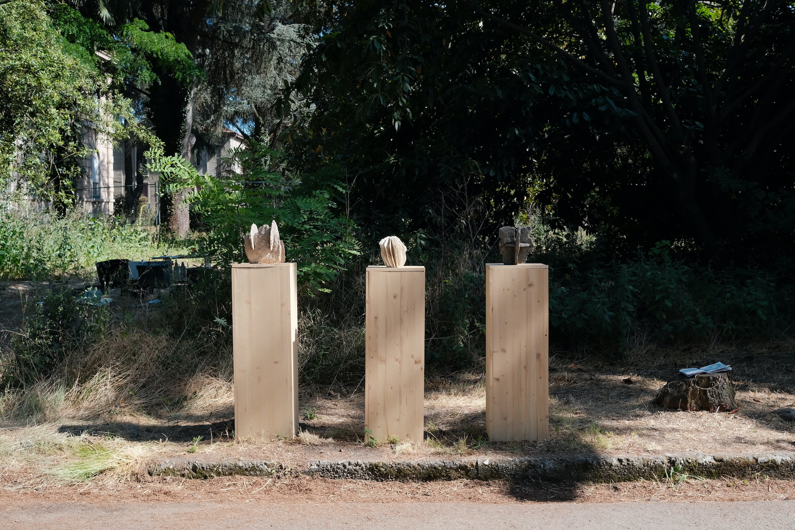

Exhibitions
Neo Stone Age
2021 Graduation show
KABK, Den Haag, NL


2021 DDW
Kazerne, Eindhoven, NL

2021 DDW
Klokgebouw, Eindhoven, NL

2022 Group Show
CentroCentro, DulceAgua, Spain

2022 Milan
Alcova, Italy
